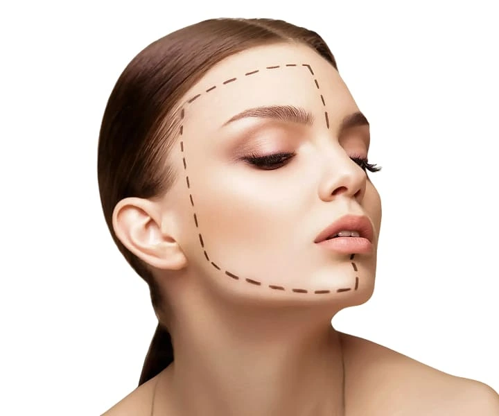

Станьте моделью нитевого лифтинга Luxeface&Luxebody

Уберите морщины и обретите четкий контур лица
под контролем сертифицированного тренера
Luxeface&Luxebody на базе клиники Expert Clinics, Москва
под контролем сертифицированного тренера
Luxeface&Luxebody на базе клиники Expert Clinics, Москва
Эксклюзивно по методологии
Luxeface & Luxebody©, Швейцария
Luxeface & Luxebody©, Швейцария
Предварительно проконсультируем
и подберём формат участия
Оставить заявку модели
и подберём формат участия